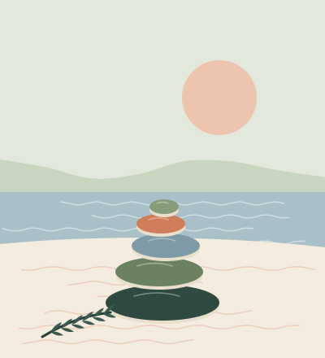

Our approach
Different ways in, the same steady care.
Every clinician here is trained in more than one approach, and most sessions draw on a few. Here’s what each method is, in plain words, what a session tends to look like and who on our team offers it.

Choose an approach
Cognitive behavioral therapy (CBT)
Noticing the link between thoughts, feelings and what we do, then testing out new ways of responding.
In plain words
CBT starts from a simple idea: the way we interpret what happens to us shapes how we feel and what we do next. Together you notice the patterns that keep you stuck, like assuming the worst or avoiding things that feel risky, and try small, practical experiments to loosen them.
What a session looks like
Sessions are structured and collaborative. You’ll usually agree on a focus at the start, look at a recent example together, and leave with something small to try before next time.
Often helpful for
- Anxiety, panic and worry
- Low mood and depression
- Sleep problems
- Stress and perfectionism
Who offers it here
Exposure and response prevention (ERP)
A form of CBT for OCD and anxiety: facing feared situations in small, planned steps, without the usual rituals.
In plain words
OCD and anxiety keep themselves going through checking, avoiding and asking for reassurance. Those habits bring short-term relief but make the fear stronger over time. ERP helps you face what you fear in small, planned steps, and learn that you can cope without the ritual.
What a session looks like
You and your therapist build a ladder of situations from mildly uncomfortable to hard. You choose every step and the pace. Some practice happens in session, some between sessions, and nothing is sprung on you.
Often helpful for
- OCD and intrusive thoughts
- Health anxiety
- Phobias
- Panic
Who offers it here
Eye movement desensitization and reprocessing (EMDR)
A structured way of processing traumatic memories so they feel less raw and intrusive.
In plain words
Some memories stay stuck, as vivid and upsetting as the day they happened. EMDR uses bilateral stimulation, such as side-to-side eye movements or alternating taps, while you briefly hold a memory in mind. Many people find the memory becomes less charged and easier to live with.
What a session looks like
EMDR is never the first step. The early sessions focus on history, safety and skills for calming your body. Processing sessions are often longer (80 minutes), and you can pause at any time.
Often helpful for
- Trauma and PTSD
- Distressing single events, such as an accident
- Grief after a sudden loss
- Some phobias and performance anxiety
Who offers it here
DBT-informed skills
Practical skills from dialectical behavior therapy for intense emotions, urges and relationships.
In plain words
Dialectical behavior therapy balances acceptance and change: accepting yourself as you are while learning new ways to cope. We use its four skill sets (mindfulness, distress tolerance, emotion regulation and getting along with others) in individual sessions and in our teen skills group. We describe our work as DBT-informed because we don’t run a full DBT program with phone coaching and a consultation team.
What a session looks like
Sessions mix skill teaching with real situations from your week. Teens often use a diary card to notice patterns, and parents may join some sessions to learn the same language.
Often helpful for
- Intense or fast-changing emotions
- Self-harm urges (alongside a safety plan)
- Conflict in relationships
- Teens who feel overwhelmed
Who offers it here
Acceptance and commitment therapy (ACT)
Making room for difficult thoughts and feelings, and moving toward what matters to you.
In plain words
ACT isn’t about getting rid of painful thoughts and feelings. It’s about changing your relationship with them, so they don’t get to make every decision. You get clearer on your values, the kind of person you want to be, and take small steps toward them, even when it’s uncomfortable.
What a session looks like
Expect metaphors, short mindfulness exercises and practical commitments. Sessions often look at where you feel pulled away from what matters and what a small step back might be.
Often helpful for
- Burnout and feeling stuck
- Chronic stress and worry
- Low mood
- Living with long-term illness or pain
Who offers it here
Gottman Method couples therapy
A research-based approach that strengthens friendship, manages conflict and builds shared meaning.
In plain words
The Gottman Method grew out of decades of research into what helps couples last. It focuses on three areas: friendship and fondness, handling conflict without it turning destructive, and building a life that has shared meaning for both of you.
What a session looks like
It usually starts with a joint session, a short individual session with each partner and an online questionnaire. Then you work on specific skills, often practicing a real conversation in the room with support.
Often helpful for
- Arguments that go in circles
- Feeling distant or like roommates
- Rebuilding trust after an affair
- Big transitions, like a new baby
Who offers it here
Emotionally focused therapy (EFT)
Understanding the emotional cycle between partners, so you can reach each other again.
In plain words
In EFT, conflict is seen as a cycle that both partners get caught in, often one pursuing and one withdrawing, driven by deeper needs for closeness and safety. Your therapist helps you slow the cycle down and say what’s really underneath it.
What a session looks like
Sessions are slower and more emotional than skills-based work. Many couples find it helps when they know what to do but still can’t seem to reach each other.
Often helpful for
- Emotional distance
- Repeated hurts
- Attachment worries
- Couples and parent–child relationships
Who offers it here
Play therapy
Helping children work through feelings and experiences in the language they know best: play.
In plain words
Young children rarely have the words for what’s bothering them, but they show it through play. In our playroom, with sand tray, art supplies, puppets and small figures, children can work through worries, changes and losses at their own pace.
What a session looks like
Children usually come weekly for 45 minutes. Parents meet the therapist regularly without the child, to understand what’s coming up and how to support it at home.
Often helpful for
- Worries and fears
- Big changes like divorce or a move
- Grief
- Behavior that has everyone stuck
Who offers it here
Family therapy
Working with the whole family, or part of it, to change patterns no one can change alone.
In plain words
When one person is struggling, the whole family feels it, and families often get stuck in patterns no one chose. Family therapy brings people together to understand those patterns and find new ways of talking, setting limits and supporting each other.
What a session looks like
Sessions may include everyone, or just the people who can come. Your therapist keeps things balanced, so each person gets heard, including the quietest one.
Often helpful for
- Conflict at home
- Blended families and co-parenting
- A child or teen who is struggling
- Adjusting after a loss or a diagnosis
Who offers it here
Mindfulness-based therapy
Learning to notice the present moment with curiosity, rather than being swept along by it.
In plain words
Mindfulness is a skill, not a mood: noticing what’s happening in your mind and body right now, without judging it. It doesn’t have to mean long meditations. Even a few minutes of practice can help with stress, rumination and sleep.
What a session looks like
Your therapist may weave short practices into sessions and suggest brief exercises between them. You can always say no to anything that doesn’t feel right, especially if focusing on your body feels unsafe.
Often helpful for
- Stress and rumination
- Recurring depression
- Sleep
- Grounding after trauma (gently)
Who offers it here
This is general information about therapy approaches, not advice about your situation. Your clinician will talk with you about what fits.
Whatever the method
What all of our work has in common
You set the pace
Nothing is pushed on you. You decide what to talk about and when, and you can say “not today”.
Goals you choose
We agree what you want to be different and check in regularly about whether therapy is helping.
Affirming care
We welcome people of every race, faith, body, gender, sexuality, neurotype and relationship style.
Privacy first
What you share stays between you and your clinician, within the limits we explain at the start.
Not sure which approach you need?
You don’t have to know. Answer five short questions and we’ll suggest the clinicians who might fit, or talk it through on a free 15-minute call.